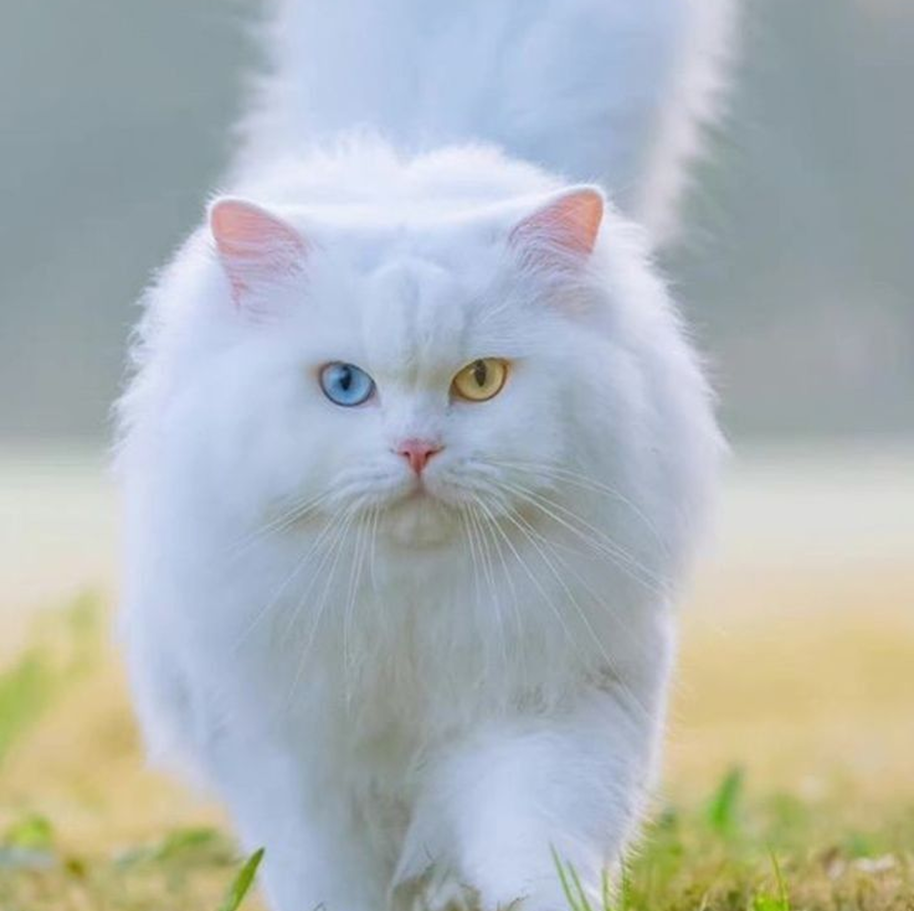

Berbulu panjang, jinak, dan cocok di dalam rumah.
Kucing Persia yang tenang dan penyayang. Sudah terbiasa dengan lingkungan rumah dan litter trained. Cocok untuk keluarga yang mencari teman manja dan lembut.
Pengadopsi bersedia melakukan perkenalan di rumah, menandatangani perjanjian adopsi, dan memastikan perawatan rutin (makanan, grooming, dan kontrol kesehatan).